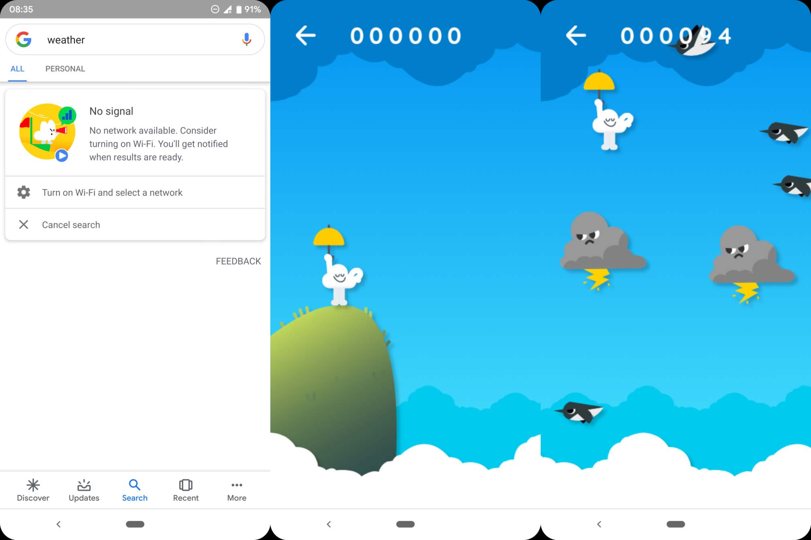

Só que se você ligar o wifi ou os dados móveis a página vai atualizar e aparecer o que você pesquisou.
O jogo é basicamente você pular por cima dos caquitos e dos dinpssauros.

Este jogo é bem conhecido entre os jogos escondidos do google.
Este jogo é bem parecido com o DINO CHROME, você precisa entra no google e se você estiver offline e digitar qualquer coisa esse jogo vai aparecer para você.
Aí é só você clicar e jogar o quanto quiser.

Para você entra no DINO CHROME você precisa estar no google e estiver offline, daí é só pesquisar qualquer coisa que ele vai aparercer.
Só que se você ligar o wifi ou os dados móveis a página vai atualizar e aparecer o que você pesquisou.
O jogo é basicamente você pular por cima dos caquitos e dos dinpssauros.
Esse daí é basicamente um site na verdadde.Dentro dele tem vários, como, a manopla do thanos, o jogo do mário, o dino chrome, o batmam, entre outros.
Na manopla do thanos se você clicar na manopla, metade dos sites vão desaparecer, no jogo do mário se você clicar no quadrado vai fazer que nem no jogo normal,etc.

O jogo do balão é basicamente igual aos dois primeiros de cima. Para entrar precisa acessar a play store.